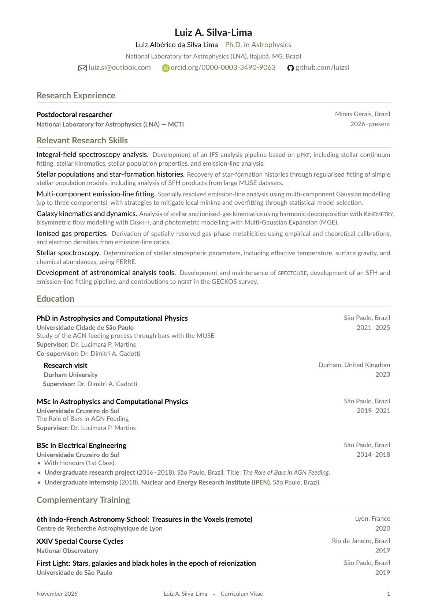
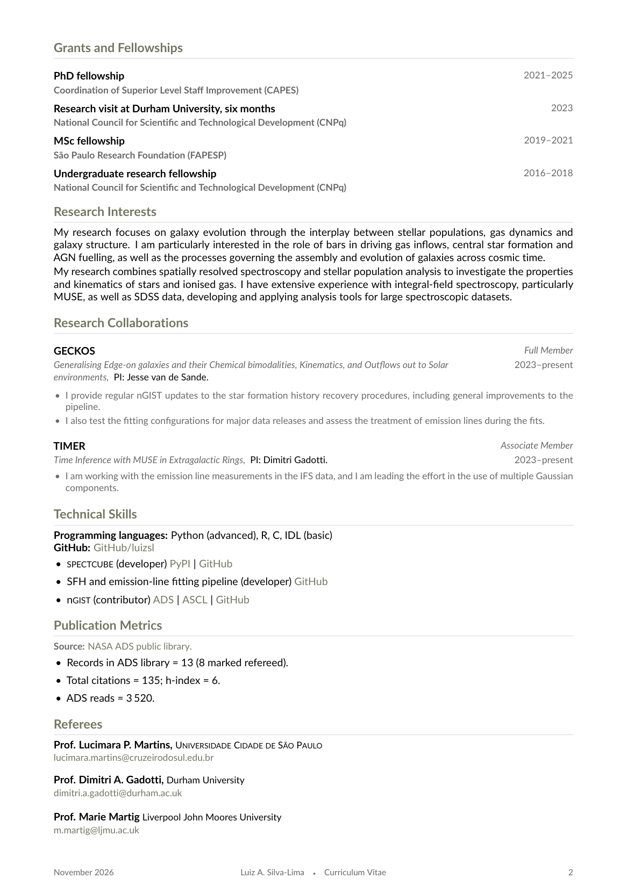
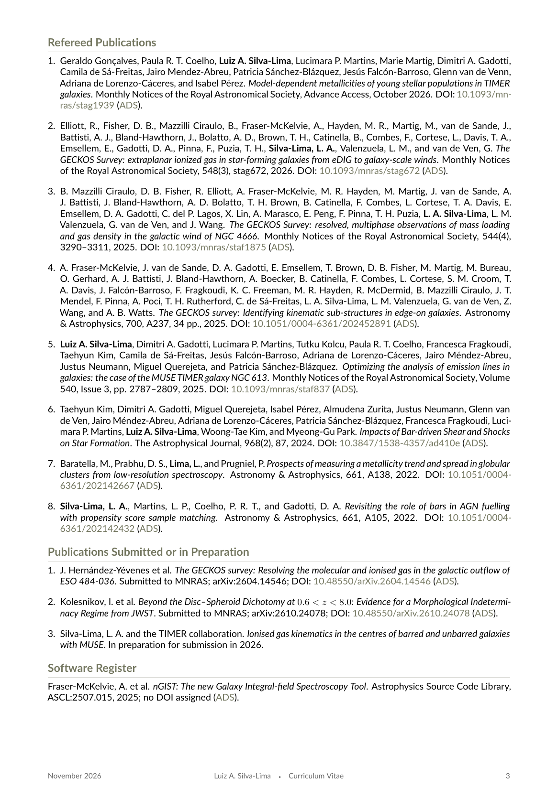
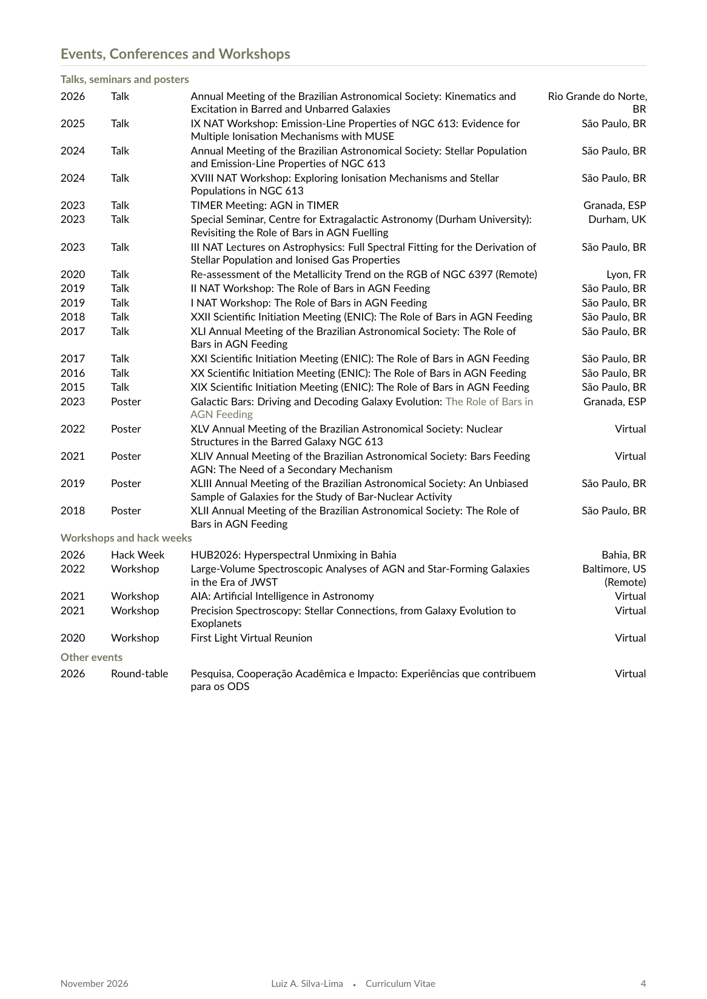

Curriculum vitae
Below is my full curriculum vitae. You can read it directly on this page or download a PDF copy for offline viewing.
Last updated: November 2026




Below is my full curriculum vitae. You can read it directly on this page or download a PDF copy for offline viewing.
Last updated: November 2026



